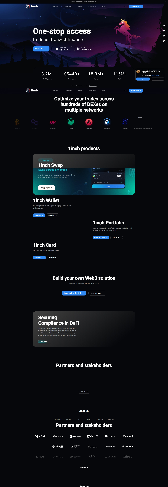
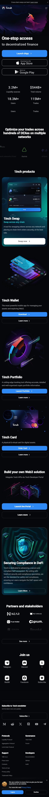

1inch Network: The Future of DeFi
The 1inch Network stands at the forefront of decentralized finance (DeFi), offering traders highly efficient cryptocurrency swap solutions across multiple platforms. This introduction to 1inch will guide you through its features, benefits, and the impact it's making in the crypto trading ecosystem.
What Makes 1inch Unique?
1inch is renowned for being a decentralized exchange aggregator. It sources liquidity from various exchanges to offer users the best possible rates. By splitting orders across multiple platforms, 1inch minimizes slippage and maximizes the value from each trade.
Core Components of 1inch
1inch Aggregation Protocol: A sophisticated routing mechanism that finds the most efficient swapping paths across multiple decentralized exchanges.
1inch Liquidity Protocol: An automated market maker (AMM) that operates in a gas-efficient way, allowing users to provide liquidity and earn a portion of trades.
1inch DAO: A decentralized autonomous organization that allows token holders to participate in the governance of the network.
Benefits of Utilizing 1inch
By tapping into 1inch's ecosystem, traders gain access to:
Optimal Rates: The cutting-edge algorithm ensures you're always getting the best prices available.
Security and Trust: As a non-custodial service, your funds remain under your control at all times.
Reduced Slippage: Smart order routing minimizes discrepancies in pricing.
Community-Driven: Participate in the governance processes thanks to the 1inch DAO.
How to Get Started with 1inch
Intrigued by what 1inch can offer? Here's a quick guide to set you on your path:
Create an Account: Visit the 1inch platform and connect your preferred wallet.
Explore and Customize: Select your desired tokens and explore the best routes for swaps.
Engage with the Community: Join the DAO, participate in discussions, and contribute to decision making.
With its robust infrastructure and commitment to the DeFi space, 1inch is poised to reshape how users interact with cryptocurrency markets. Embrace this innovative platform and leverage it for a more efficient trading experience.